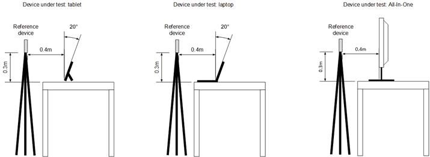

Communications Audio Fidelity Test (Manual) - Certification
The Windows Hardware Certification Program defines a minimum bar for audio quality of devices that have integrated loudspeakers and microphone(s). The Communications Audio Fidelity test verifies that the system meets the hardware certification requirements for a high fidelity audio playback and capture experience.
Test details
|
Associated requirements |
Device.Audio.Base.InAirFidelity |
|
Platforms |
Windows RT 8.1
|
|
Expected run time |
~10 minutes |
|
Categories |
Certification |
|
Type |
Manual |
Running the test
Before you run the test, complete the test setup as described in the test requirements: Audio Device Testing Prerequisites.
This test requires the following items:
-
One test computer that has at least one microphone and one loudspeaker (referred to as the Device under Test [DUT]).
-
One Polycom CX-100 USB device for reference and measurement.
The test is required for systems that have at least one microphone and one loudspeaker. The test does not require an anechoic chamber; it can be performed in a quiet office environment.
The in-air audio fidelity test is implemented in the Windows Hardware Certification Kit (Windows HCK). The Windows HCK tests play speech signals from the device under test and from a reference device to simulate realistic user scenarios.
You should perform the in-air audio fidelity tests in a typical office environment that has background noise that is less than 35 dBA SPL. Put the device under test (DUT) on a table in a position for typical usage and mount the Polycom CX-100 reference device on a tripod, as shown in REF _Ref345316931 \h Figure 1 Device under Test Setup. Connect the reference device to the DUT by using a USB connection.
Step-by-step instructions for running the test:
Watch the following video demonstration.

Send feedback about this video
-
Prepare the client for Windows HCK testing.
-
Put the device and reference device in a quiet room (background noise less than 35 dBA SPL).
-
Position the device and reference device according to the diagram in the reference document.
-
0.4 m forward of the device
-
0.3m above the device
-
0.5m overall
-
Laptop or slate screen should be at a 20 degree angle from vertical.
-
Centerline of both devices should be lined up.
-
The reference device should be vertically oriented as shown in REF _Ref345316931 \h Figure 1 Device under Test Setup, with its speaker facing the DUT.
-
0.4 m forward of the device
-
Connect the reference device to the DUT by using USB.
-
Schedule and run the Communications Audio Test on the Windows HCK Controller.

Figure 1 Device under Test Setup
The following eight tests are performed and the results are compared to the Windows Hardware Certification Requirements for in-air audio fidelity:
Microphone tests
-
Speech to noise ratio of the raw microphone signal when capturing a speech signal that is played back by the reference device that is located 0.5m from the DUT.
-
Digital signal level of the raw microphone signal when capturing a speech signal that is played back by the reference device that is located 0.5m from the DUT.
-
Clipping (saturation) of the raw microphone signal when capturing a speech signal played that is back by the reference device that is located 0.5m from the DUT.
Loudspeaker test
-
Output level of the loudspeaker(s) at 0.5m when rendering a digital speech signal by the DUT.
Combined microphone and loudspeaker tests
-
Clipping of raw microphone signal during loudspeaker playback of speech signal at nominal volume.
-
Echo attenuation by the Windows acoustic echo canceller during speech playback by the DUT.
-
Latency between microphone and loopback signal that is not reported by the timestamps.
-
Measurement of mouth to ear latency; that is, the time difference between when the signal is given to the loudspeaker renderer and when it is obtained from the microphone capture.
Troubleshooting
For additional troubleshooting information, see Troubleshooting Audio Testing.
Microphone tests troubleshooting
This section describes common problems that can occur during microphone testing.
Speech to noise ratio
If the speech to noise ratio is lower than the requirement, check the following possible causes:
-
The room in which the test has been performed is too noisy; it does not meet the <35dBA SPL requirement. Use a sound pressure level meter to verify that the background noise is below 35dBA SPL. Repeat the test in a quiet room that meets this requirement.
-
The microphone(s) have a low signal to noise ratio (SNR). Use microphones that have a higher SNR.
-
The microphones are not isolated from the fan noise. Make sure that quiet fans are used and that the microphones are located away from the fans and are mechanically isolated from fan noise.
-
Electrical components can cause a buzzing noise. Ensure electrical components don’t emit any audible noise.
Digital signal level
This test plays a speech signal from the reference device and captures it by using the microphone of the DUT. The test automatically adjusts the microphone level in the control panel of the Windows operating system. If the microphone capture signal level is too low, we recommend the following solutions:
-
The analog microphone gain that is exposed to the operating system cannot be amplified high enough. Use an amplifier that has higher analog gain.
-
The sensitivity of the digital microphone is too low. Use a digital microphone that has higher sensitivity.
If the microphone capture level is too high, we recommend the following solutions:
-
The analog microphone gain that is exposed to the operating system has a signal that cannot be reduced low enough. Make sure that the correct gain range is exposed by using the firmware of the preamplifier.
-
The sensitivity of the digital microphone is too high. Use a digital microphone that has lower sensitivity.
Speech played back by reference device is clipped
If the microphone signal is clipped, we recommend the following solutions:
-
The analog microphone gain that is exposed to the operating system cannot be reduced low enough. Make sure that the correct gain range is exposed by using the firmware of the preamplifier.
-
The sensitivity of the digital microphone is too high. Use a digital microphone that has lower sensitivity.
Loudspeaker test troubleshooting
This section describes common problems that can occur during loudspeaker testing.
Output signal level
If the loudspeaker output level is too low, we recommend the following solutions:
-
Check that the loudspeaker assembly is properly sealed to the speaker grill.
-
Check that the grill holes are more than 50% open.
-
Use a loudspeaker that has higher sensitivity.
Combined microphone and loudspeaker tests troubleshooting
This section describes common problems that can occur during combined microphone and loudspeaker testing.
Speech played back by device under test is clipped
This test plays back a speech signal from the DUT and captures the signal on the same DUT. The test checks whether the captured signal is clipped (that is, saturated) after the microphone level found in the control panel of the Windows operating system is automatically adjusted to prevent clipping. The microphone level is only reduced to a point where it still meets the requirement for the microphone output signal level when it plays back a speech signal from the reference device. For example, a device under test might need a microphone level of ≥+10dB to pass the microphone output signal test. In this case, the clipping test for speech played back by the DUT needs to pass at a microphone level setting of ≥+10dB.
If the microphone signal that is recorded during playback of sound by the speaker was clipped (saturated), we recommend the following solutions:
-
Mechanically isolate the loudspeakers from the microphones to reduce the loudspeaker to microphone coupling. In addition, to prevent coupling through the device enclosure, the microphone boot should be sealed to the chassis and the speaker assembly should be sealed to the speaker grill.
-
Ensure that the analog gain of the preamplifier can be reduced enough to avoid microphone clipping.
Echo attenuation
If the acoustic echo canceller cannot remove a sufficient amount of echo in the microphone signal, we recommend the following solutions:
-
Reduce the coupling total harmonic distortion and noise by reducing rattles that are caused to keys, wires, tape, etc.
-
Increase the terminal coupling loss by more fully separating loudspeaker(s) and microphone(s).
-
Use loudspeakers that have better total harmonic distortion.
Unreported latency between microphone and loudspeaker loopback signal
To ensure that the microphone signal is either completely aligned with the loudspeaker signal or is slightly delayed, acoustic echo cancellers align the loudspeaker and microphone signal based on timestamps. If too much delay occurs, the acoustic echo canceller cannot fully cover the echo that is caused by reverberation. Failures must be fixed by improving the implementation of the timestamps. A timestamp is determined by device streaming positions (DevPos), application streaming position (AppPos) and system performance counter (QPC: query performance counter) by using the IAudioCaptureClient::GetBuffer method. Assuming that the audio stream sampling rate is FS, the timestamp is calculated as: TS=QPC+(AppPos-DevPos)/FS.
Mouth to ear latency
If mouth to ear latency is too high, users cannot have a full-duplex conversation and unintentionally talk over each other. We recommend that you reduce latency in the following ways:
-
Improve the audio driver to have a lower delay.
-
Reduce the delay in render-side on-board processing (for example, volume leveler algorithms), or turn off render-side processing.
-
If a raw microphone API is used, make sure that the audio drivers disable capture side processing (as required by the Windows Hardware Certification Requirements).
See Also